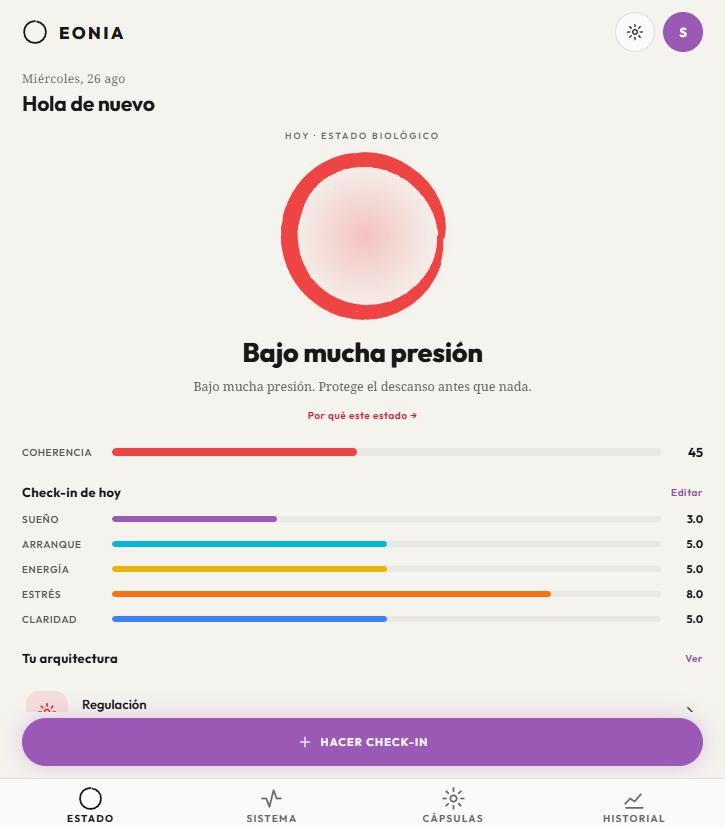
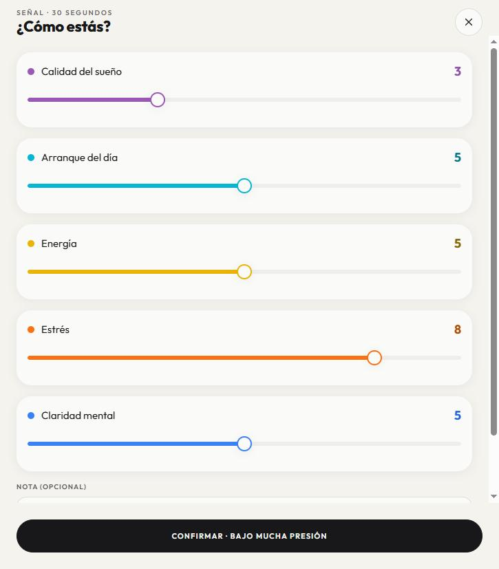
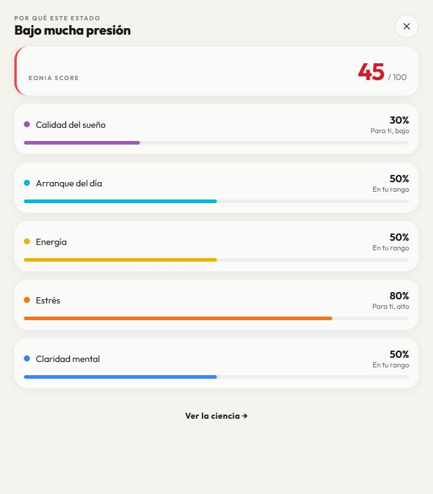
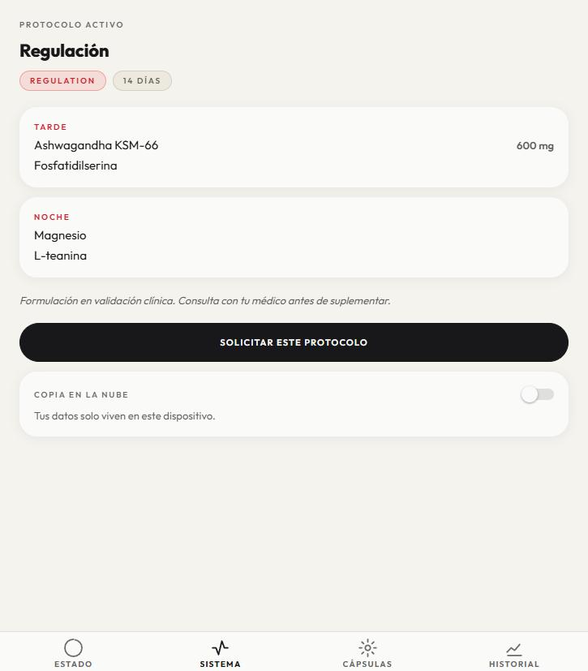
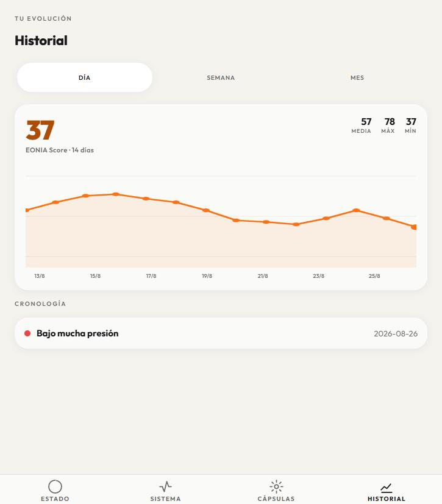
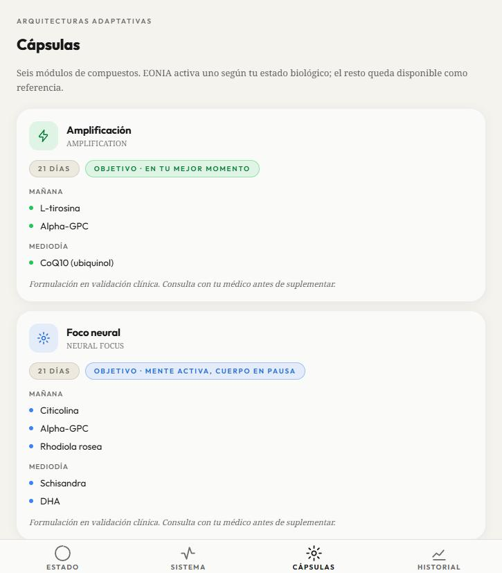

Producto propio · 2026
Una app que no te recomienda: decide. Un check-in de 30 segundos se convierte en un estado biológico calculado y en una arquitectura de cápsulas adaptada a ese estado — todo en el dispositivo.

El usuario de alto rendimiento de 2026 tiene más datos biológicos que ninguna generación anterior: HRV del wearable, analíticas, podcasts de longevidad. Y sigue tomando los mismos suplementos cada mañana, dé igual cómo esté hoy.
Oura, WHOOP, Apple Health. Excelentes midiendo.
Suplementación basada en evidencia. Excelente en formulación.
Vacío. Aquí es donde vive el producto.
Un sistema que recomienda traslada la carga cognitiva al usuario; un sistema que decide la absorbe.
La diferencia es estructural, no incremental. El usuario de EONIA no necesita entender el eje HPA para beneficiarse de él. De ahí la tesis que gobierna todo lo demás — comprensión por encima de dato: cada pantalla responde a una sola pregunta, ¿qué tengo que hacer ahora mismo para estar bien?, sin gráficas y sin jerga por delante.
El proyecto arrancó con un set documental completo (SPEC · ARCHITECTURE · SCAFFOLD · DESIGN · HANDOFF) antes de la primera línea de producto, y cada decisión estructural quedó fijada como un ADR con su alternativa descartada. No es burocracia: en un producto que toca salud, la trazabilidad de por qué el sistema decide lo que decide es parte del producto.
@eonia/engine no tiene I/O, ni React, ni red, ni modelo de lenguaje. Entra un
check-in, sale un estado y una arquitectura. Es el único sitio donde se decide. Consecuencia
deliberada: el mismo paquete corre en el dispositivo y en el servidor y
produce el mismo veredicto — el modo offline no es una versión degradada, es el mismo sistema.
El motor y los datos viven en el dispositivo (SQLite en nativo, localStorage en web). La nube llegó después y llegó opt-in: sincronización aditiva, nunca una dependencia del bucle diario. La app es plenamente funcional sin servidor.
La visualización central (Skia + Reanimated, trazo de pincel sumi-e) tiene que comunicar el estado biológico pre-cognitivamente: en menos de un segundo, sin leer ni interpretar. Un donut chart habría sido más barato y habría fallado en el único requisito que importaba.
Capa 1: qué hacer. Capa 2: por qué. Capa 3: el mecanismo fisiológico. La profundidad está disponible, nunca impuesta — y se impone como frontera en el código, no como convención de diseño.
El repositorio arrastraba una plataforma multitenant de una etapa anterior. En vez de tirarla —o de dejar que empujase el producto hacia B2B— el ADR fijó la relación: el dispositivo es autoritativo, el servidor es una capa aditiva (backup, sync, admin, fulfillment futuro) y la superficie multitenant queda dormida. Una decisión de producto escrita como decisión de arquitectura.
La capa narrativa (@eonia/narrative) genera el informe personalizado con LangGraph
y Claude, bajo una restricción dura heredada de ADR-01: el motor decide, el LLM solo
explica. El nodo de preparación es código puro —normalización, aritmética de
tendencias, resolución de etiquetas— y el modelo recibe un contexto grounded del que
no puede salir: no deriva un estado, ni una arquitectura, ni un número propio. Tres
especialistas analizan en paralelo, un nodo sintetiza y una puerta de seguridad decide entre
entregar o escalar.
Una alucinación en el nodo de normalización se habría propagado a todas las ramas. Por eso ese nodo no es una llamada al modelo.
Las fórmulas vivían como constantes en el motor: actualizar un protocolo era un despliegue. Se
movieron a base de datos y se construyó una consola de back-office (apps/admin,
React + Vite) con tres roles no jerárquicos — admin (usuarios, auditoría),
specialist (catálogo de compuestos, fichas RAG) y provider (peticiones,
envíos). Editar el catálogo invalida la firma clínica y sube la versión, y la
clave de caché de los informes incluye esa versión. Es la única vía por la que un farmacéutico
—no un commit— puede firmar un protocolo.
Con la beta ya en manos de testers, todos los usuarios quedaron bloqueados tras verificar su
email. La causa: force_organization_selection activado en el proveedor de
identidad. Cada sesión recibía una tarea de «elegir organización» que un usuario B2C nunca
puede satisfacer; la sesión se quedaba pending, el cliente la contaba igualmente y
el modo de sesión única rechazaba cualquier login nuevo con session_exists. Se
arregló en dos frentes: la configuración y el cliente —recuperación explícita
de sesiones inutilizables—, porque una app en producción no puede depender de que la consola de
un tercero esté bien configurada.
| Workspace | Qué es |
|---|---|
packages/engine | Núcleo de decisión puro: scoring ponderado, baseline individual, clasificación en 6 estados, histéresis de transición de 3 días, arquitecturas bloqueadas y dosificación circadiana por compuesto. 35 tests. |
apps/mobile | App Expo Router: STATE · SYSTEM · CAPSULES · HISTORY, con el check-in como modal. Persistencia local, sync opcional, login opcional, ES/EN. |
apps/backend | API NestJS: sync en la nube, informes narrativos, API de la consola, harness de personas sintéticas y la superficie multitenant dormida. |
apps/admin | Consola de back-office React + Vite servida por el backend, con las tres superficies de rol. |
packages/narrative | Capa narrativa LangGraph + Claude, grounded contra la salida del motor. |
Check-in diario de 5 dimensiones —sueño · arranque · energía · estrés · claridad— en unos 30 segundos.
EONIA Score, baseline personal y uno de 6 estados biológicos: PEAK_PERFORMANCE, SYSTEMIC_BASELINE, HPA_OVERLOAD, ALLOSTATIC_ADAPTATION, PARASYMPATHETIC_DEFICIT, COGNITIVE_PRIORITY.
Una de 6 arquitecturas de cápsulas —AMPLIFICATION, NEURAL_FOCUS, DEEP_RECOVERY, REGULATION, ANTI_INFLAMMATORY, BASELINE— con ventanas circadianas por compuesto.
El siguiente check-in refina la decisión siguiente. La arquitectura solo cambia tras 3 días coherentes seguidos: histéresis deliberada contra la oscilación por ruido.





Capturas del build web del MVP con datos de demostración.
Sin gamificación. Ni rachas, ni medallas, ni felicitaciones. El tono es el de
un instrumento de precisión: frío, exacto, sin adorno. Es una postura, no un descuido.
Sin gráficas por delante. Los números crudos nunca son la superficie primaria.
Sistema visual propio. Papel y tinta cálidos, tipografía display geométrica y
un espectro de 7 acentos cromáticos donde cada dimensión posee su tono en orbe, porcentaje y barra.
ADR-06 no resolvió un problema de código: resolvió si el producto era B2C o B2B2C. Escribirlo como decisión de arquitectura fue lo que impidió que el backend heredado arrastrase el producto hacia donde no quería ir.
La tentación era dejar que el modelo interpretase los datos. Restringirlo a explicar una decisión ya tomada por código verificable es lo que hace el sistema auditable — y lo que permite que el modo offline no pierda nada esencial.
Si actualizar un protocolo exige un despliegue, el experto de dominio queda fuera del producto. Mover el catálogo a base de datos con firma y versionado convirtió una app en un sistema operable.
Un flag mal puesto en el proveedor de identidad bloqueó al 100% de los testers. Desde ese incidente, el cliente asume que la configuración remota puede estar mal y se recupera sola.
Instrumentar el bucle de onboarding con analítica de producto desde el día uno. Los tests cubren el motor; no cubren la pregunta de si la gente vuelve al día siguiente.
Señales objetivas (Oura, WHOOP, Apple HealthKit) como fuente de señal enchufable.
Primera arquitectura física (REGULATION) en fulfillment real y panel de prescriptor.
Formulación generativa personalizada.